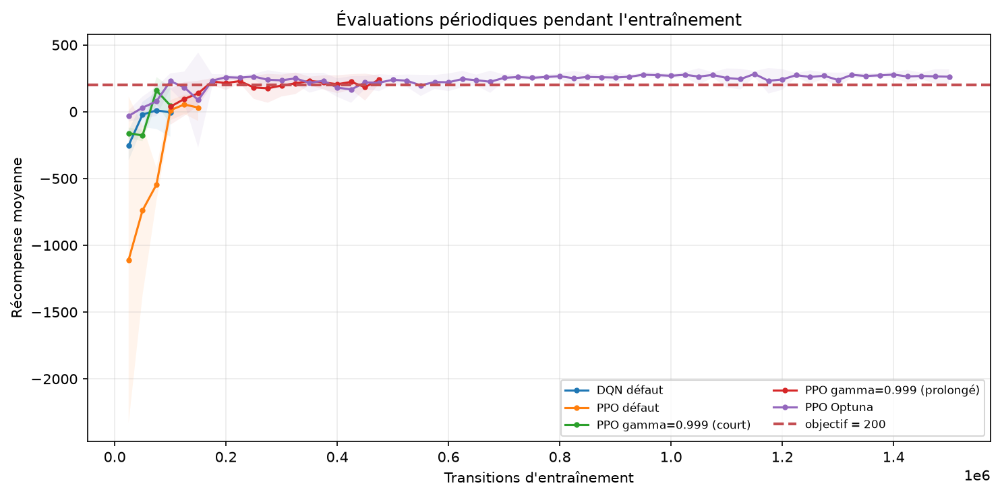
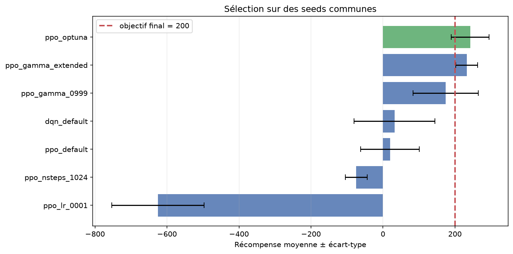
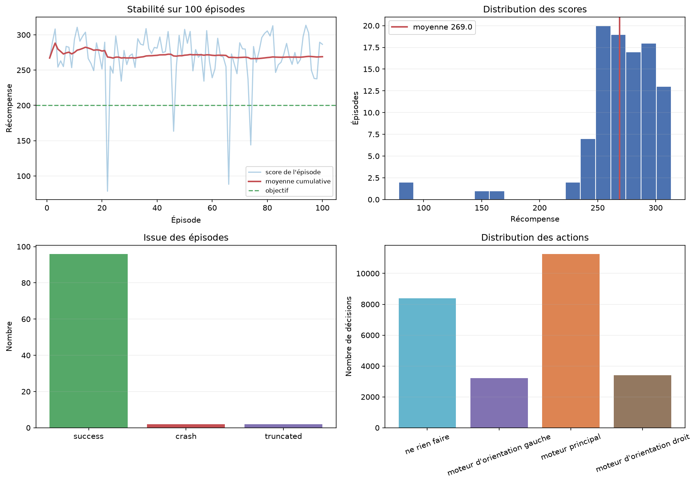

Guide personnel de compréhension du projet
Une vue complète et reliée du notebook, de la journalisation, des modèles,
de l’API, de la GUI, du dashboard et du dossier artifacts/.
artifacts/ est la mémoire partagée, l’API prend les décisions,
la GUI joue les épisodes et le dashboard raconte les résultats.
Mode d’emploi de ce document
Cette documentation se lit une première fois dans l’ordre. Ensuite, elle sert de référence avant une démonstration, une modification du code ou une session de bilan. Les chemins sont exprimés depuis la racine du projet.
Pour imprimer
- Ouvrir ce fichier dans Chrome, Edge ou Firefox.
- Cliquer sur Imprimer / PDF ou faire
Ctrl+P. - Choisir A4, échelle 100 %, arrière-plans activés.
- Désactiver les en-têtes/pieds du navigateur si souhaité.
Pour lancer la démo
uv run python launch_demo.py
Le lanceur ouvre l’API, la GUI et le dashboard. Ctrl+C arrête tout.
Sommaire
- 1. Vision globale et architecture
- 2. Le notebook, cœur scientifique
- 3. Comment et pourquoi les données sont loguées
- 4. Anatomie complète de
artifacts/ - 5. API : contrôler l’entrée et servir une action
- 6. GUI : jouer via l’API et enregistrer un run
- 7. Dashboard : transformer les logs en récit
- 8. Lanceur de démonstration
- 9. Tests et validation
- 10. Un épisode de bout en bout
- 11. Modifier le projet sans casser les flux
- 12. Dépannage et préparation de l’oral
Vision globale et architecture
Le projet n’est pas une seule application : c’est une chaîne où chaque composant a un rôle précis et échange soit des fichiers, soit des requêtes HTTP.
Les flèches pleines représentent les flux principaux. Le dashboard ne pilote jamais le module : il observe des données déjà enregistrées.
Responsabilités en une phrase
| Composant | Responsabilité | Ce qu’il ne doit pas faire |
|---|---|---|
| Notebook | Explorer, entraîner, comparer, sélectionner, évaluer et sauvegarder. | Servir des requêtes de production. |
| artifacts/ | Conserver les sorties reproductibles et les contrats de données. | Contenir de la logique métier. |
| API | Transformer un état validé en action avec le modèle retenu. | Créer l’environnement ou entraîner. |
| GUI | Faire tourner LunarLander, appeler l’API, afficher et sauvegarder le vol. | Charger directement Stable-Baselines3. |
| Dashboard | Lire les logs et rendre les performances interactives. | Modifier le modèle ou les évaluations. |
| Lanceur | Démarrer, vérifier et arrêter les trois services. | Dupliquer leur logique interne. |
artifacts/ n’est pas importé avec
une instruction Python comme un package. Les applications construisent des
chemins avec pathlib.Path, puis chargent des fichiers ZIP, CSV,
JSON ou NPZ. C’est un contrat de données partagé.
Les deux types d’échange
Échanges par fichiers
Notebook → artifacts → API/dashboard. Ils sont persistants, auditables et réutilisables sans relancer l’entraînement.
ZIPCSVJSONNPZMP4Échanges HTTP
GUI → API pendant un épisode. Ils sont dynamiques : à chaque pas, l’état courant produit une action.
GET /healthPOST /playJSONLe notebook, cœur scientifique
ASTRODYNAMICS/NB.ipynb construit la preuve expérimentale. Son rôle
n’est pas seulement de produire un modèle, mais de montrer pourquoi ce modèle a été retenu.
2.1 Le contrat d’apprentissage par renforcement
8 valeurs
DQN ou PPO
entier 0 à 3
LunarLander-v3
st+1, récompense
| Indice | Variable | Interprétation |
|---|---|---|
| 0 | position x | Décalage horizontal par rapport au centre de la cible. |
| 1 | position y | Hauteur normalisée. |
| 2 | vitesse x | Vitesse horizontale normalisée. |
| 3 | vitesse y | Vitesse verticale normalisée. |
| 4 | angle | Inclinaison du module en radians. |
| 5 | vitesse angulaire | Vitesse de rotation. |
| 6 | contact gauche | 1 si le pied gauche touche le sol, sinon 0. |
| 7 | contact droit | 1 si le pied droit touche le sol, sinon 0. |
| Action | Effet | Coût utilisé pour le proxy carburant |
|---|---|---|
| 0 | Ne rien faire | 0 |
| 1 | Moteur d’orientation gauche | 0,03 |
| 2 | Moteur principal | 0,30 |
| 3 | Moteur d’orientation droit | 0,03 |
La récompense favorise le rapprochement de la cible, une faible vitesse, un module
vertical et les contacts des pieds. Le carburant est pénalisé. Le dernier pas vaut
environ +100 en cas d’atterrissage stable et -100 en cas de crash.
2.2 Pourquoi DQN puis PPO ?
DQN : la baseline naturelle
Les actions sont discrètes. DQN produit quatre valeurs Q(s,a), puis choisit l’action de valeur maximale. Il répond directement à la recommandation de la mission.
PPO : le candidat optimisé
PPO accepte aussi les actions discrètes. Il produit quatre probabilités d’action et une valeur d’état. La ressource fournie orientait l’étude des hyperparamètres PPO.
2.3 Déroulé expérimental réel
| Étape | Expérience | Budget | But et résultat |
|---|---|---|---|
| Référence minimale | random_baseline | 50 épisodes | −213,04 de moyenne, 0 % de réussite. |
| Baseline officielle | dqn_default | 100 000 pas | Pipeline DQN validé ; 29,85 et 22 % sur la baseline. |
| Baseline PPO | ppo_default | 150 000 pas | Point de comparaison sans réglage ; 41,81 et 18 %. |
| Screening isolé | gamma, lr, n_steps | 3 × 100 000 pas | Un paramètre change à la fois. gamma=0.999 domine avec 169,49 et 80 %. |
| Prolongation | ppo_gamma_extended | +400 000 pas | Continue le meilleur checkpoint gamma sans changer d’autre paramètre. |
| Combinaison | ppo_optimized | 800 000 pas, 8 env. | Teste une configuration PPO combinée et plus coûteuse. |
| Sélection commune | 7 candidats | 50 seeds à partir de 5000 | ppo_gamma_extended gagne : 232,95, 100 % de réussite. |
| Évaluation officielle | ppo_gamma_extended_final_100 | 100 seeds à partir de 10000 | 227,39 ± 48,37 ; 95 % de réussite. |
ppo_optimized désigne la
configuration combinée, pas le modèle finalement exposé. Sur les seeds communes,
ppo_gamma_extended a obtenu 232,95 contre 195,84. C’est donc lui que
l’API charge.
2.4 Reproductibilité et séparation des seeds
Le notebook fixe les seeds de Python, NumPy, PyTorch et des environnements. Chaque phase possède ensuite sa propre plage : entraînement, screening à partir de 2000, réglage à 3000, sélection à 5000, finale à 10000. La finale ne sert jamais à choisir le modèle : elle mesure une généralisation après décision.
FAST_MODE
Réduit fortement les budgets pour vérifier la mécanique. Ses résultats ne valident pas la mission.
FORCE_RETRAIN
À False, un best_model.zip existant est rechargé. À True, l’expérience est réentraînée.
2.5 La fonction train_experiment()
Cette fonction centralise le protocole afin que chaque candidat soit construit de manière comparable :
- Crée les répertoires du modèle, du Monitor et de l’évaluation périodique.
- Recharge un checkpoint existant si le réentraînement n’est pas forcé.
- Crée un environnement vectorisé avec
make_vec_env. - Ajoute
Monitorpour tracer récompenses et longueurs d’épisode. - Configure
EvalCallbackpour tester régulièrement la politique. - Relie TensorBoard via
tensorboard_log. - Entraîne avec
model.learn(). - Sauvegarde le modèle final, la configuration, les versions et la durée.
- Recharge le meilleur checkpoint disponible pour la suite.
callback = EvalCallback(
eval_env,
best_model_save_path=str(model_dir),
log_path=str(eval_dir),
eval_freq=max(25_000 // n_envs, 1),
deterministic=True,
)
model.learn(total_timesteps=budget, callback=callback)
model.save(final_path)
return Algorithm.load(best_path, device="cpu")
best_model.zip correspond au
meilleur score observé par EvalCallback. final_model.zip
correspond simplement au dernier état de l’entraînement. Une courbe RL fluctue :
le dernier modèle n’est pas forcément le meilleur.

EvalCallback.2.6 La fonction evaluate_agent()
L’évaluateur détaillé rejoue chaque épisode avec une seed explicite. À chaque pas,
il prédit une action déterministe, appelle env.step(), cumule la récompense,
compte les moteurs et peut enregistrer l’état avant/après ainsi que les diagnostics réseau.
À la fin d’un épisode, l’issue est déterminée ainsi :
truncatedsi la limite de temps a interrompu l’épisode ;successsi la récompense du dernier pas est proche de+100;crashdans les autres cas terminaux.
La fonction écrit ensuite episodes.csv, éventuellement steps.csv,
calcule summary.json, puis met à jour le registre global.

2.7 Résultat final et vidéo
Les 100 épisodes finaux produisent 45 746 transitions détaillées. Le notebook sélectionne ensuite une seed réellement réussie, rejoue exactement cet épisode avec le même modèle et ajuste les FPS pour viser une vidéo de 20 à 30 secondes.
Comment et pourquoi les données sont loguées
La journalisation a été pensée avant le dashboard. Chaque niveau répond à une question différente : « comment le réseau apprend ? », « est-il stable ? », « pourquoi a-t-il choisi cette action ? ».
3.1 Les niveaux de granularité
| Niveau | Fichier / outil | Question à laquelle il répond |
|---|---|---|
| Configuration | configs/*.json | Avec quelle seed, quelles versions, quel budget et quels hyperparamètres ? |
| Entraînement | monitor/*.csv | Quels scores et longueurs ont été observés pendant la collecte ? |
| Interne au réseau | tensorboard/ | Comment évoluent pertes, entropie, valeur expliquée et statistiques SB3 ? |
| Évaluation périodique | evaluations.npz | Quel checkpoint a le meilleur score au cours de l’entraînement ? |
| Évaluation synthétique | summary.json | Quelle est la performance globale d’un candidat ? |
| Par épisode | episodes.csv | Combien de réussites, crashs, pas, moteurs, et quelles positions finales ? |
| Par décision | steps.csv | Quel état a conduit à quelle action, récompense et probabilité ? |
| Registre global | experiment_registry.csv | Comment comparer toutes les évaluations dans une table unique ? |
| Utilisation GUI | gui_runs/ | Que s’est-il passé pendant les démonstrations interactives ? |
| Processus démo | demo_logs/ | Pourquoi un service ne démarre-t-il pas ? |
3.2 Les quatre mécanismes du notebook
1. Monitor
Wrapper Gymnasium/SB3. Il écrit r (retour), l (longueur) et t (temps) quand un épisode d’entraînement se termine.
2. TensorBoard
SB3 écrit des événements binaires. Ils permettent d’inspecter les métriques internes et les courbes d’apprentissage sans inventer de logs manuels.
3. EvalCallback
À intervalles réguliers, il évalue en déterministe, écrit evaluations.npz et remplace le meilleur checkpoint lorsque le score progresse.
4. evaluate_agent()
Évaluateur métier sur mesure : il produit les métriques terminales, le proxy carburant, les actions et la télémétrie nécessaires au dashboard.
3.3 Pourquoi plusieurs formats ?
| Format | Qualité recherchée | Usage |
|---|---|---|
| JSON | Lisible, hiérarchique | Une configuration ou un résumé unique. |
| CSV | Tabulaire, compatible pandas/Looker | Épisodes, pas, registre, Monitor. |
| NPZ | Compact, tableaux NumPy | Résultats périodiques de EvalCallback. |
| ZIP SB3 | Modèle sérialisé complet | Chargement par Stable-Baselines3. |
| TensorBoard events | Historique spécialisé | Visualisation des métriques d’entraînement. |
| PNG / MP4 | Preuve directement présentable | Figures du notebook et vidéo de livraison. |
3.4 Schéma d’un épisode final
episodes.csv contient une ligne par épisode :
evaluation_id, algorithm, episode_id, seed, total_reward, episode_length, outcome, success, truncated, final_step_reward, final_x, final_y, final_vx, final_vy, final_angle, final_angular_velocity, left_contact, right_contact, fuel_proxy, action_0_count, action_1_count, action_2_count, action_3_count
steps.csv contient une ligne par décision :
identifiants + step + action + action_label + reward + cumulative_reward + terminated + truncated + state_0 ... state_7 + next_state_0 ... next_state_7 + prob_0 ... prob_3 + state_value # si PPO
log_steps=True. Cette option est réservée aux évaluations finales,
car le fichier devient volumineux et le diagnostic réseau ralentit la boucle.
3.5 Registre global et principe d’upsert
_upsert_registry(summary) retire l’ancienne ligne portant le même
evaluation_id, ajoute la nouvelle, puis réécrit le CSV. Une relance ne
crée donc pas deux lignes concurrentes pour la même évaluation.
evaluated_at_utc.
3.6 Diagnostics PPO
Pour PPO, policy_diagnostics() passe l’observation dans la politique,
extrait les quatre probabilités de la distribution catégorielle et la valeur
estimée par le critique. Cela rend une trajectoire explicable sans prétendre que
ces probabilités constituent une preuve causale.
obs_tensor, _ = model.policy.obs_to_tensor(observation) distribution = model.policy.get_distribution(obs_tensor).distribution probabilities = distribution.probs[0] state_value = model.policy.predict_values(obs_tensor)
Anatomie complète de artifacts/
Ce dossier est la mémoire durable du projet. Sans lui, l’API n’a plus de modèle, le dashboard n’a plus de données et les résultats du notebook ne sont plus auditables.
ASTRODYNAMICS/artifacts/ ├── configs/ # paramètres et contexte de 7 entraînements ├── evaluations/ # résultats périodiques, épisodes et transitions ├── experiment_registry.csv # synthèse de toutes les évaluations ├── figures/ # graphiques PNG produits par le notebook ├── gui_runs/ # runs joués depuis la GUI ├── models/ # best_model.zip et final_model.zip ├── monitor/ # retours observés pendant l'entraînement ├── tensorboard/ # métriques internes SB3 ├── video/ # vidéo finale d'atterrissage └── demo_logs/ # stdout/stderr API, GUI, dashboard
4.1 Producteurs et consommateurs
| Sous-dossier | Produit par | Lu par | Rôle |
|---|---|---|---|
configs/ | Notebook | Humain, audit | Rejouer et justifier une expérience. |
evaluations/ | Notebook, callbacks | Dashboard, validation | Mesures détaillées et courbes. |
experiment_registry.csv | Notebook | Dashboard | Comparaison globale des expériences. |
figures/ | Notebook | Notebook, rapports, ce document | Preuves visuelles statiques. |
gui_runs/ | GUI | Dashboard | Relier la démo aux métriques historiques. |
models/ | Notebook / SB3 | API, notebook | Poids et paramètres sérialisés. |
monitor/ | Monitor SB3 | Humain, outils d’analyse | Historique brut des épisodes d’entraînement. |
tensorboard/ | SB3 | TensorBoard | Diagnostic interne de l’apprentissage. |
video/ | Notebook / RecordVideo | Livraison | Preuve de manœuvre réussie. |
demo_logs/ | launch_demo.py | Humain | Dépannage des processus ; ignoré par Git. |
4.2 Les configurations
Chaque JSON mémorise l’identifiant, l’algorithme, l’environnement, la seed, le budget, les versions et les chemins de modèles. Les entraînements neufs ajoutent notamment la durée et les hyperparamètres ; une prolongation indique plutôt son checkpoint source et son budget additionnel. Exemple conceptuel :
{
"experiment_id": "ppo_gamma_0999",
"algorithm": "PPO",
"seed": 52,
"total_timesteps": 100000,
"hyperparameters": {"gamma": 0.999},
"versions": {"Gymnasium": "1.3.0", "Stable-Baselines3": "2.9.0"}
}
4.3 Les évaluations
Deux familles coexistent sous evaluations/ :
<experiment_id>/during_training/evaluations.npz: points périodiques deEvalCallback;<evaluation_id>/episodes.csv|steps.csv|summary.json: évaluation métier après entraînement.
Les suffixes donnent le rôle : baseline, screen,
tuning, selection, final_100. Le dashboard
utilise cette convention pour calculer la colonne phase.
4.4 Pourquoi garder aussi les essais non retenus ?
Les fichiers de ppo_lr_0001, ppo_nsteps_1024 et
ppo_optimized sont des résultats négatifs ou secondaires utiles.
Ils prouvent que la sélection n’a pas été fabriquée après coup et permettent au
dashboard d’expliquer le chemin expérimental complet.
4.5 Volumétrie actuelle
| Donnée | Ordre de grandeur | Pourquoi cette taille ? |
|---|---|---|
evaluations/ | ≈ 49 Mio, 43 fichiers | Deux fichiers pas-à-pas contiennent plus de 106 000 transitions. |
models/ | ≈ 2 Mio, 14 ZIP | Deux checkpoints pour chacune des 7 expériences. |
gui_runs/ | ≈ 1 Mio | Résumé et télémétrie de 11 runs enregistrés. |
tensorboard/ | < 1 Mio | Événements compressés et spécialisés. |
figures/ | 3 PNG | Courbes, sélection et bilan final. |
video/ | 1 MP4 | Atterrissage réussi de 25,31 secondes. |
4.6 Contrats de chemin dans les applications
# API Path(__file__).resolve().parents[1] / "artifacts" / "models" / MODEL_ID / "best_model.zip" # GUI Path(__file__).resolve().parents[1] / "artifacts" / "gui_runs" # Dashboard Path(__file__).resolve().parents[1] / "artifacts"
Ces chemins partent du fichier de l’application, pas du terminal courant. Cela évite qu’un lancement depuis un autre répertoire casse l’accès aux données.
API : contrôler l’entrée et servir une action
ASTRODYNAMICS/api/app.py expose le flux métier minimal :
état validé → modèle PPO → action sérialisable.
5.1 Cycle de vie du modèle
- FastAPI démarre et exécute le gestionnaire
lifespan. get_model_path()choisit le chemin par défaut ouEAGLE1_MODEL_PATH.- L’existence du fichier est contrôlée.
PPO.load(..., device="cpu")charge le modèle une seule fois.- Le modèle est conservé dans
app.state.modelet réutilisé à chaque requête. - À l’arrêt, la référence est libérée.
5.2 Contrôle des données d’entrée
class StateRequest(BaseModel):
state: Annotated[list[float], Field(min_length=8, max_length=8)]
deterministic: bool = True
@field_validator("state")
def state_must_be_finite(cls, state):
if not all(math.isfinite(value) for value in state):
raise ValueError("Toutes les composantes doivent être finies.")
return state
| Contrôle | Mécanisme | Effet |
|---|---|---|
Clé state présente | Pydantic | Une requête sans état reçoit une erreur HTTP 422. |
| Exactement 8 éléments | min_length=8, max_length=8 | Les listes de 7 ou 9 valeurs sont refusées. |
| Valeurs numériques | list[float] | Une chaîne non convertible comme « invalide » est refusée. |
| Valeurs finies | math.isfinite | NaN et infinis ne peuvent pas atteindre le réseau. |
| Mode de décision | deterministic: bool = True | La démo utilise par défaut l’action la plus probable. |
5.3 Conversion et prédiction
liste Python
8 floats finis
shape (8,), float32
predict()
int 0..3
observation = np.asarray(payload.state, dtype=np.float32)
action, _ = request.app.state.model.predict(
observation,
deterministic=payload.deterministic,
)
action_id = int(np.asarray(action).item())
5.4 Routes
| Méthode | Route | Fonction |
|---|---|---|
| GET | /health | Confirme que le service et le modèle sont prêts. |
| POST | /predict | Route principale état → action. |
| POST | /play | Alias explicite utilisé par la GUI. |
| GET | /docs | Documentation OpenAPI/Swagger générée automatiquement. |
Requête
{
"state": [0.0, 1.0, 0.0, -0.1,
0.0, 0.0, 0.0, 0.0],
"deterministic": true
}
Réponse
{
"action": 2,
"action_label": "moteur principal",
"model_id": "ppo_gamma_extended"
}
5.5 Ce qui est testé
- Le endpoint de santé confirme le chargement du modèle.
- Une observation valide renvoie une action dans
{0,1,2,3}. - Les longueurs 7 et 9 et une valeur non numérique renvoient 422.
- Un épisode LunarLander complet passe action par action via HTTP.
- La seed 10000 termine sur un vrai atterrissage, avec score supérieur à 200.
GUI : jouer via l’API et enregistrer un run
ASTRODYNAMICS/gui/app.py possède l’environnement et l’affichage,
mais pas le modèle. Toutes les décisions passent par HTTP.
6.1 Séparation volontaire des responsabilités
La GUI connaît
- LunarLander-v3 et son rendu ;
- l’URL de l’API ;
- les métriques d’affichage ;
- le format des logs GUI.
La GUI ne connaît pas
- Stable-Baselines3 ;
- le chemin du modèle ;
- les hyperparamètres PPO ;
- les poids du réseau.
Le test de validation vérifie d’ailleurs que la chaîne
stable_baselines3 n’apparaît pas dans le code GUI.
6.2 Boucle réelle de play_episode()
- Créer
gym.make("LunarLander-v3"). - Réinitialiser avec la seed choisie par l’utilisateur.
- Convertir l’observation NumPy en liste JSON.
- Envoyer
POST /playavecdeterministic=True. - Récupérer l’action entière.
- Appeler
env.step(action). - Cumuler récompense, carburant et télémétrie.
- Afficher périodiquement l’image et les métriques.
- Recommencer jusqu’à
terminatedoutruncated. - Fermer l’environnement et le client HTTP.
response = http_client.post(
f"{api_url}/play",
json={"state": observation.tolist(), "deterministic": True},
)
action = int(response.json()["action"])
next_observation, reward, terminated, truncated, _ = env.step(action)
6.3 Affichage Streamlit
| Zone | Contenu |
|---|---|
| Barre latérale | URL API, seed, fréquence d’image, contrôle de santé, bouton de lancement. |
| Image | Frame RGB renvoyée par env.render(). |
| Métriques live | Pas, action, récompense cumulée et altitude. |
| Bilan | Réussite/échec, score, nombre de pas et proxy carburant. |
| Graphiques | Récompense cumulée et distribution des actions. |
| Détail | DataFrame complet de la télémétrie. |
6.4 Sauvegarde d’un run
save_run() crée un identifiant UTC, écrit le résumé et les pas dans
un sous-dossier, puis ajoute le résumé à gui_runs/runs.csv.
gui_runs/
├── runs.csv
└── 20260717T071906Z_seed10000/
├── summary.json
└── steps.csv
Le résumé contient :
run_id, seed, total_reward, steps, outcome, success, final_reward, fuel_proxy
Le CSV pas-à-pas contient l’action, la récompense, x, y, vx, vy, l’angle,
la vitesse angulaire, les contacts et les indicateurs de fin. Il est plus léger
que le steps.csv final du notebook, car la GUI ne demande pas à l’API
les probabilités internes de PPO.
6.5 Facilité de test
Le paramètre optionnel client permet d’utiliser le
TestClient FastAPI sans réseau réel. La fonction _endpoint()
renvoie alors une route relative. En production, elle construit une URL complète
pour httpx.Client. La même logique est donc testée sans la dupliquer.
Dashboard : transformer les logs en récit
ASTRODYNAMICS/dashboard/app.py est un consommateur en lecture seule.
Il n’appelle pas l’API et n’a pas besoin que LunarLander tourne.
7.1 Fonctions de chargement
| Fonction | Source | Transformation |
|---|---|---|
load_registry() | experiment_registry.csv | Ajoute phase et pourcentage de réussite. |
list_episode_evaluations() | Présence de episodes.csv | Construit les choix disponibles. |
load_episodes() | CSV d’une évaluation | Retourne les épisodes filtrables. |
load_steps() | CSV pas-à-pas | Retourne les trajectoires. |
load_learning_curves() | Tous les evaluations.npz | Fusionne timesteps, moyenne et écart-type. |
load_gui_runs() | gui_runs/runs.csv | Retourne les démonstrations récentes. |
7.2 Les cinq onglets et leur storytelling
1. Vue mission
Montre le passage des baselines au modèle final, avec moyenne, dispersion, réussite et carburant.
2. Apprentissage
Lit les NPZ d’EvalCallback pour expliquer la progression et les fluctuations.
3. Épisodes
Filtre issue et score afin que la moyenne ne masque pas les crashs.
4. Trajectoire
Choisit un épisode et affiche altitude, vitesse verticale, angle et actions.
5. Runs GUI
Relie les vols interactifs aux résultats hors ligne et montre les nouveaux essais.
7.3 Métriques de tête
Le dashboard cherche explicitement la ligne
ppo_gamma_extended_final_100 dans le registre. C’est elle qui alimente
score final, écart-type, réussite, pas moyens et carburant. Cette constante est
le contrat qui relie la sélection du notebook à la présentation finale.
FINAL_EVALUATION_ID = "ppo_gamma_extended_final_100"
final_row = registry[
registry["evaluation_id"] == FINAL_EVALUATION_ID
].iloc[0]
7.4 Interactivité
- Filtres globaux par algorithme et phase pour la vue mission ;
- multisélection des expériences dans les courbes d’apprentissage ;
- sélection d’une évaluation, des issues et d’une plage de score ;
- sélection d’un épisode pour inspecter une trajectoire ;
- survol Plotly pour lire seed, score, longueur ou carburant.
7.5 Actualisation après une démonstration
Une fois un épisode sauvegardé par la GUI, Streamlit relit
gui_runs/runs.csv lors du prochain rerun ou rafraîchissement.
Aucun transfert vers une base de données n’est nécessaire pour cette version locale.

Lanceur de démonstration
launch_demo.py transforme trois commandes et trois terminaux en une
seule opération reproductible.
uv run python launch_demo.py
8.1 Ce que fait le lanceur
- Lit les ports demandés : 8000, 8501 et 8502 par défaut.
- Choisit automatiquement d’autres ports si nécessaire.
- Crée un dossier horodaté dans
artifacts/demo_logs/. - Démarre l’API avec l’interpréteur actif de
uv run. - Attend
/healthet vérifiemodel_loaded=true. - Transmet l’URL réelle via
EAGLE1_API_URL. - Démarre la GUI et le dashboard avec Streamlit.
- Attend leurs endpoints
/_stcore/health. - Ouvre les trois pages dans le navigateur.
- Surveille les processus et arrête leurs groupes avec
Ctrl+C.
8.2 URLs et logs
| Service | URL par défaut | Journal |
|---|---|---|
| API | http://127.0.0.1:8000/docs | api.log |
| GUI | http://127.0.0.1:8501 | gui.log |
| Dashboard | http://127.0.0.1:8502 | dashboard.log |
8.3 Options utiles
# Ne pas ouvrir le navigateur uv run python launch_demo.py --no-browser # Imposer d'autres ports uv run python launch_demo.py \ --api-port 8010 --gui-port 8511 --dashboard-port 8512 # Échouer au lieu de choisir automatiquement un port libre uv run python launch_demo.py --strict-ports
Tests et validation
Les tests ne cherchent pas seulement des fonctions isolées : ils valident le flux complet état → API → action → environnement → réussite → fichiers → dashboard.
9.1 Suite pytest
uv run pytest \ ASTRODYNAMICS/api/tests \ ASTRODYNAMICS/gui/tests \ ASTRODYNAMICS/dashboard/tests -q
| Zone | Cas exécutés | Preuve fournie |
|---|---|---|
| API | 6 | Santé, action valide, trois entrées invalides et épisode HTTP réussi. |
| GUI | 1 | Épisode réussi, colonnes attendues, résumé et registre écrits. |
| Dashboard | 3 | Métriques finales, 100 épisodes, logs pas-à-pas et courbes d’apprentissage. |
État actuel : 10 tests réussis.
9.2 Validation mission
uv run python ASTRODYNAMICS/validate_mission.py
Ce script vérifie notamment :
- notebook entièrement exécuté et sans sortie d’erreur ;
- baseline sur au moins 50 épisodes ;
- finale de 100 épisodes et moyenne supérieure à 200 ;
- présence du modèle et des logs détaillés ;
- vidéo entre 20 et 30 secondes issue d’une seed réussie ;
- présence de l’API, de la GUI et du dashboard ;
- interactivité du dashboard et absence de modèle dans la GUI.
État actuel : 15 contrôles sur 15 validés.
9.3 Pourquoi la seed 10000 est importante
Le test d’intégration utilise une seed finale connue et rejoue un vrai épisode.
Il ne se contente pas de vérifier que l’API renvoie 200 HTTP : il exige une
récompense terminale de +100, un score total supérieur à 200 et moins
de 1000 pas. Cela prouve que l’action servie est opérationnelle dans l’environnement.
Un épisode de bout en bout
Voici le trajet exact d’une information pendant une démonstration, depuis le clic utilisateur jusqu’à son apparition dans le dashboard.
- Démarrage : le lanceur charge
best_model.zipdans l’API, puis ouvre la GUI. - Clic : l’utilisateur choisit la seed 10000 et clique sur « Lancer un épisode ».
- Reset : Gymnasium renvoie un tableau NumPy de forme
(8,). - Sérialisation : la GUI appelle
observation.tolist(). - HTTP : la liste est envoyée à
POST /play. - Validation : Pydantic contrôle présence, longueur, types et finitude.
- Format réseau : l’API convertit en
np.float32. - Inférence : PPO renvoie une action déterministe.
- Réponse : FastAPI sérialise l’action, son libellé et le modèle.
- Dynamique : la GUI applique l’action avec
env.step(). - Télémétrie : la récompense, l’état suivant et l’action sont ajoutés à une ligne.
- Rendu : une image sur N et quatre métriques sont mises à jour.
- Boucle : les étapes 4 à 12 se répètent jusqu’à l’atterrissage ou au crash.
- Persistance :
summary.json,steps.csvetruns.csvsont écrits. - Dashboard : l’onglet Runs GUI relit le registre au rafraîchissement.
float32 dans l’API. Chaque
conversion est volontaire et testée.
Modifier le projet sans casser les flux
11.1 Ajouter une nouvelle expérience
- Choisir un
experiment_idunique. - Appeler
train_experiment()avec budget, seed et paramètres. - Évaluer avec un
evaluation_idexplicite. - L’ajouter aux candidats de sélection si elle doit concourir.
- Comparer sur les mêmes seeds, pas sur son meilleur épisode.
- Si elle gagne, créer une nouvelle évaluation finale indépendante.
- Mettre à jour
MODEL_IDdans l’API etFINAL_EVALUATION_IDdans le dashboard. - Relancer les tests et la validation.
11.2 Ajouter une métrique au dashboard
question métier
notebook ou GUI
colonne/clé
fonction dashboard
schéma + valeur
Exemple : pour afficher la consommation du moteur principal par épisode, la donnée
existe déjà dans action_2_count. Il suffit de la charger et de la
visualiser ; il ne faut pas la recalculer approximativement depuis une figure.
11.3 Modifier le contrat API
Une modification du format d’entrée doit rester synchronisée dans quatre endroits :
| Endroit | Raison |
|---|---|
| Section de formatage du notebook | Documenter et simuler le contrat. |
| Modèle Pydantic de l’API | Valider le contrat en production. |
| Payload envoyé par la GUI | Rester compatible côté client. |
| Tests API et GUI | Détecter immédiatement une rupture. |
11.4 Changer de modèle final
Modifier uniquement le ZIP sur disque est insuffisant. Le nom du modèle est présent dans les réponses et le dashboard pointe vers une évaluation précise. La procédure sûre est :
- copier/sauvegarder le nouveau meilleur checkpoint dans son propre dossier ;
- mettre à jour
MODEL_IDet vérifier le chemin par défaut ; - mettre à jour
FINAL_EVALUATION_IDsi la finale change ; - adapter les valeurs attendues par les tests ;
- rejouer au moins le test d’intégration et la validation mission.
11.5 Carte du code
| Fichier | Point d’entrée / fonctions clés |
|---|---|
ASTRODYNAMICS/NB.ipynb | train_experiment, evaluate_agent, policy_diagnostics, format_api_state. |
ASTRODYNAMICS/api/app.py | lifespan, StateRequest, predict_action, routes. |
ASTRODYNAMICS/gui/app.py | check_api, play_episode, save_run, main. |
ASTRODYNAMICS/dashboard/app.py | Fonctions load_*, fonctions render_*, main. |
launch_demo.py | resolve_ports, start_service, wait_until_ready, stop_services. |
ASTRODYNAMICS/validate_mission.py | main et dictionnaire des 15 contrôles. |
Dépannage et préparation de l’oral
12.1 Problèmes fréquents
| Symptôme | Cause probable | Action |
|---|---|---|
| Port déjà occupé | Ancien Streamlit/Uvicorn actif | Le lanceur choisit un autre port. Lire l’URL affichée ou utiliser --strict-ports. |
| API ne démarre pas | Modèle introuvable | Vérifier artifacts/models/ppo_gamma_extended/best_model.zip ou définir EAGLE1_MODEL_PATH. |
| HTTP 422 | État absent, longueur incorrecte ou valeur invalide | Envoyer exactement 8 nombres finis sous la clé state. |
| GUI : API indisponible | Mauvaise URL ou API non prête | Tester /health ou utiliser le lanceur unique. |
| Dashboard sans runs GUI | Aucun runs.csv | Jouer et sauvegarder un épisode, puis rafraîchir. |
| Le notebook ne réentraîne pas | Checkpoint existant et FORCE_RETRAIN=False | Activer volontairement FORCE_RETRAIN ou changer d’identifiant. |
| Kernel local instable | Ordre d’import Triton / Box2D / pygame | Conserver l’import facultatif de Triton avant Gymnasium/Box2D dans cet environnement. |
| Une courbe manque | evaluations.npz absent | Vérifier que l’entraînement a utilisé EvalCallback. |
12.2 Déroulé conseillé pour la démonstration
- Lancer
uv run python launch_demo.py. - Dans /docs, montrer
/healthet le schémaStateRequest. - Tester
/predictavec un état valide, puis éventuellement une liste de 7 valeurs. - Dans la GUI, vérifier l’API et lancer la seed 10000.
- Commenter état → action, récompense, altitude et carburant pendant le vol.
- Montrer le dossier de run sauvegardé.
- Dans le dashboard, raconter baseline → screening → sélection → finale.
- Terminer par les 100 épisodes, les 95 % de réussite et les limites.
12.3 Réponses courtes pour l’oral
Pourquoi PPO alors que les actions sont discrètes ?
DQN est bien la baseline naturelle. PPO accepte aussi un espace discret via une distribution catégorielle et la ressource d’optimisation portait sur PPO. La sélection expérimentale, pas une préférence théorique, a tranché.
Pourquoi 100 épisodes ?
Un épisode réussi ne prouve rien. Cent seeds indépendantes donnent une moyenne, une dispersion et un taux de réussite plus fiables.
Pourquoi une API entre GUI et modèle ?
Elle formalise le contrat état → action, centralise le chargement et la validation, et découple le client du framework ML.
Pourquoi autant de logs ?
Les métriques finales expliquent « combien », les épisodes expliquent « dans quels cas » et les pas expliquent « comment ».
Le proxy carburant est-il physique ?
Non. Il reproduit les pénalités relatives des moteurs : 0,30 principal et 0,03 latéral. C’est un indicateur cohérent, pas des kilogrammes.
Pourquoi garder best et final ?
Le RL fluctue. Le dernier état n’est pas nécessairement celui qui a obtenu la meilleure évaluation périodique.
12.4 Limites à annoncer honnêtement
- LunarLander est une simulation simplifiée, pas un système spatial réel.
- 95 % de réussite signifie qu’il reste 5 % d’épisodes non réussis.
- Une seed améliore la reproductibilité sans garantir un déterminisme universel entre matériels.
- Le proxy carburant n’est pas une unité physique.
- L’API locale n’implémente ni authentification ni limites de débit.
- Les fichiers CSV volumineux conviennent au projet, mais une base de données serait préférable à grande échelle.
12.5 Résumé à mémoriser
- Le notebook construit une démarche reproductible et produit tous les artefacts.
- Les logs sont enregistrés à trois granularités : expérience, épisode et pas.
- La sélection sur seeds communes retient
ppo_gamma_extended. - L’API charge une fois le modèle, valide 8 nombres finis et renvoie une action 0–3.
- La GUI possède l’environnement mais demande chaque action à l’API.
- La GUI ajoute ses propres runs dans
artifacts/gui_runs/. - Le dashboard lit les fichiers ; il ne pilote ni n’entraîne le modèle.